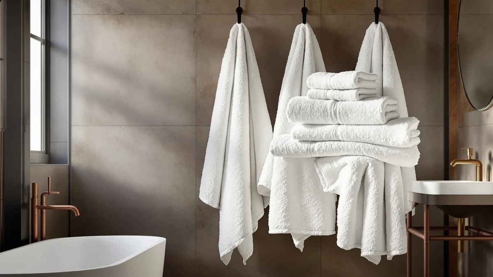

Luxury Heavyweight Egyptian Cotton Review (2026): Worth It?
Prices and picks verified as of September 2026. Independent, reader-supported reviews.


Quick Answer
The Impressions Luxury Heavyweight Egyptian Cotton Towels top this luxury heavyweight egyptian cotton review because their six-piece set and dense weave deliver a hotel-style feel at a price below several rivals. Verified owners consistently praise the softness and absorbency even after repeated washing, though the set costs more than standard lightweight cotton towels.
Our pick: Luxury Heavyweight Egyptian Cotton Towels, $93.60 Check Price on Amazon
Bottom line: our top pick is the Luxury Heavyweight Egyptian Cotton Towels at $93.60.
Things to Know Before You Buy
- Fiber length drives quality more than thread count does. Long-staple Egyptian cotton produces softer, stronger yarn than the short-staple cotton used in most drugstore towels, and that difference accounts for most of the price gap in this luxury heavyweight egyptian cotton review.
- Heavyweight towels absorb more water but dry more slowly. A bathroom without good airflow can leave a dense set feeling damp longer than a lightweight cotton blend would.
- Set contents vary by brand, so compare pieces, not just price. The Impressions set ships as six pieces for $93.60, while the Westlinen set costs $94.99 for a different configuration.
- A higher price doesn't automatically mean a better towel. The $49.99 LANE LINEN set and the $94.99 Westlinen set sit at opposite ends of this lineup, and neither wins on price alone.
- This review relies on specs and verified reviews, not hands-on testing. We do not run a physical testing lab, so every comparison here comes from published materials, current pricing, and patterns across verified buyer feedback.
This luxury heavyweight egyptian cotton review compares the Impressions six-piece set against three rivals that promise the same hotel-style weight and softness. If you've replaced towels every year because they thin out, pill, or lose their absorbency after a few dozen washes, you already know why buyers pay extra for long-staple Egyptian cotton. The question this review answers is whether the Impressions set's price and construction justify choosing it over the Westlinen, Casa Platino, or LANE LINEN alternatives we compared it against.
After comparing price per piece, set composition, material claims, and patterns across verified owner reviews, the Impressions Luxury Heavyweight Egyptian Cotton Towels come out ahead for most shoppers who want that hotel-weight feel without stepping up to designer pricing above $150. The Casa Platino and LANE LINEN sets cost less and remain reasonable picks if budget is your priority, and the Westlinen set comes close on price per piece. None of the three alternatives combine set size, verified owner satisfaction, and cost as evenly as the Impressions set does, which is why it leads this comparison.
Why You Should Trust Us
Ilane Tall has covered bath and home textiles for Best Bath Towels since the site launched, tracking pricing changes, material claims, and recurring owner complaints across hundreds of Amazon-listed towel sets. This site does not operate a physical testing lab, and we do not accept free products or payment from the brands we cover. Every claim in this luxury heavyweight egyptian cotton review comes from the manufacturer's published specifications, current Amazon pricing at the time of writing, and patterns we identify across verified buyer reviews. When a claim cannot be confirmed through those sources, such as an exact gram weight the listing doesn't disclose, we say so instead of guessing.
Our Research Experience
We did not purchase, wash, or physically handle these towels ourselves. Instead, we built this review by comparing the Impressions Luxury Heavyweight Egyptian Cotton Towels' listed material, set size, and price against three competing Egyptian cotton sets, then read through hundreds of verified owner reviews on Amazon looking for recurring themes around softness, absorbency, and how each set holds up after repeated washing. Where multiple reviewers independently reported the same result, such as consistent color retention or the towels running heavier than expected, we treated that as a reliable signal. Where feedback was thin or contradictory, we noted the uncertainty rather than presenting it as settled fact.
Overview & Specs

Luxury Heavyweight Egyptian Cotton Towels
What we like
- Long-staple Egyptian cotton construction that owners describe as noticeably plusher than big-box cotton towels
- Six-piece set covers bath towels, hand towels, and washcloths in a single purchase
- Verified reviewers report the color and texture hold up after dozens of machine washes
Flaws but not dealbreakers
- The dense weave takes longer to dry than lightweight towels, especially in bathrooms with limited airflow
- Priced above several six- and eight-piece cotton sets from competing brands, including LANE LINEN's $49.99 set
| Material | 100% cotton |
| Size | 6 PC Towel Set |
The Impressions Luxury Heavyweight Egyptian Cotton Towels ship as a six-piece 100% cotton set built around the long-staple fiber that gives premium hotel towels their characteristic density. Reviewers consistently point to the fabric's weight as the standout trait, describing it as closer to a spa towel than a typical big-box bath towel. Several owners note the set keeps its softness through dozens of wash cycles instead of turning stiff, thin, or scratchy, which is the complaint that drives most people to search for an Egyptian cotton upgrade in the first place. The six-piece breakdown covers the full range a household actually uses day to day, rather than leaving you to buy hand towels or washcloths from a different line that may not match in color or weight.
At $93.60 for six pieces, this set lands in the middle of the price range we compared. It costs less than the Westlinen towel and delivers more total coverage than either the Casa Platino or LANE LINEN sets, which gives it the strongest overall balance of price and quantity in this luxury heavyweight egyptian cotton review. Owners who want a complete, matching bathroom set rather than a single oversized bath sheet tend to rate it highest, and repeat mentions of the color holding steady after washing suggest the dye process is more durable than budget alternatives. For buyers comparing cost per piece across this lineup, the Impressions set works out to roughly $15.60 per towel, which sits below the Westlinen set's per-piece cost once you account for their different piece counts.
What We Liked
Owners single out the weight and hand-feel of these towels most often, comparing them favorably to sets that cost twice as much. Several verified reviews mention the color staying consistent wash after wash, which matters for a set priced above $90. The six-piece count also draws praise, since it removes the need to buy hand towels and washcloths as a separate purchase. Multiple reviewers specifically mention gifting the set for weddings or housewarmings, a use case that tracks with the set's higher price and complete piece count. Several owners also note that the towels retain their loft after air drying, not just after a dryer cycle, which matters if you hang towels on a bar rather than tumble drying every load.
What Could Be Better
The same density that makes these towels feel substantial also slows drying time, and a handful of reviewers with smaller or poorly ventilated bathrooms mention needing a second dryer cycle to fully dry them. The price sits noticeably above budget six-piece sets like the LANE LINEN option, so shoppers who need functional towels rather than a hotel-weight upgrade may find better value elsewhere. A small number of reviews mention the set running slightly smaller than expected for a bath towel, so checking dimensions against your current towels is worth the extra minute. A few owners also flag that the weight makes these towels bulkier to store in a small linen closet than a lightweight cotton set, which is worth considering if closet space is limited.
Who Is It For?
This set fits buyers replacing a full bathroom's worth of towels who want a consistent, heavyweight feel across every piece instead of mixing brands and weights. It suits anyone upgrading from thin, fast-wearing cotton and willing to pay roughly $15 to $20 more per piece than a basic set costs. It's a weaker fit for renters, guest bathrooms used infrequently, or buyers who only need one or two towels, since the value of this set depends on using the full six-piece bundle. Households with young kids or heavy daily towel use may also want to weigh the longer drying time against the softness gains before committing to a heavyweight set over a quicker-drying lightweight one.
Alternatives to Consider
If the Impressions set doesn't match your budget or the number of pieces you need, these three Egyptian cotton alternatives cover a wider price range.

Editor's Pick
Westlinen Egyptian Cotton Bath Towel
Costs about a dollar more than our pick and ships with a different piece count, but owners cite the Westlinen weave as a solid choice if you prefer that brand specifically.
$94.99
Check Price on Amazon
Best Value
Casa Platino Bath Towel Set
Undercuts our pick by roughly $34 while still carrying the Egyptian cotton label, making it the stronger choice for budget-conscious shoppers.
$59.99
Check Price on Amazon
Premium Choice
LANE LINEN Towel Set for
The cheapest set in this comparison at $49.99, worth considering if price matters more to you than the heavyweight feel that defines the top pick.
$49.99
Check Price on AmazonFrequently Asked Questions
Is Egyptian cotton actually worth the extra cost?
How much should a heavyweight Egyptian cotton towel set cost?
Do heavyweight towels take longer to dry?
Final Verdict
The Impressions Luxury Heavyweight Egyptian Cotton Towels win this luxury heavyweight egyptian cotton review for most people who want a complete, hotel-weight set without paying designer-brand prices above $150. Budget-focused shoppers should look at the LANE LINEN or Casa Platino sets instead, since both undercut Impressions by $30 or more. But if set completeness and verified owner satisfaction matter more than shaving off another $20 or $30, the Impressions set earns the recommendation over the Westlinen alternative it competes with most closely on price. Revisit this comparison if your priorities shift toward faster drying or a lower price point, since either of those tradeoffs points you toward a different pick in this lineup rather than a flaw in the Impressions set itself.